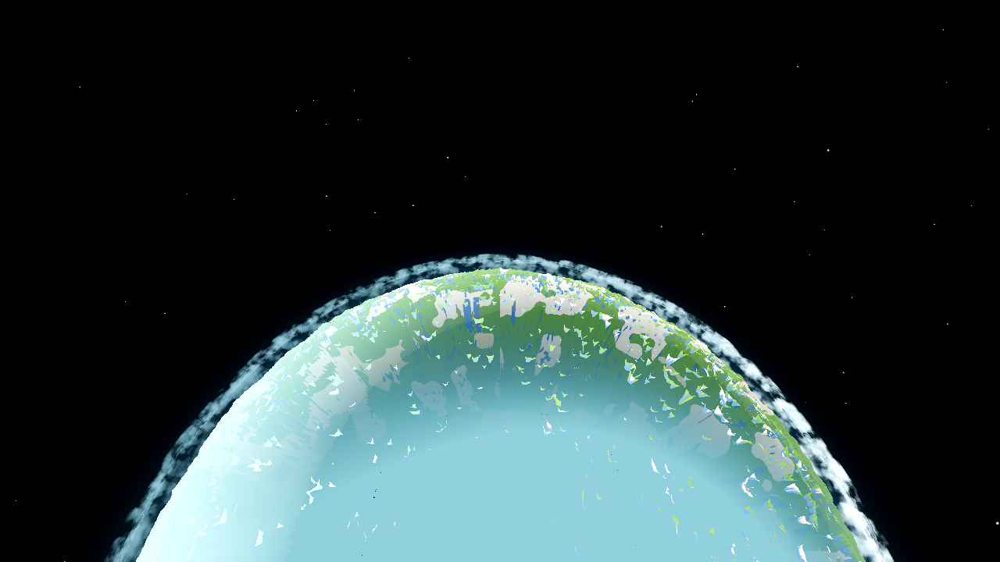
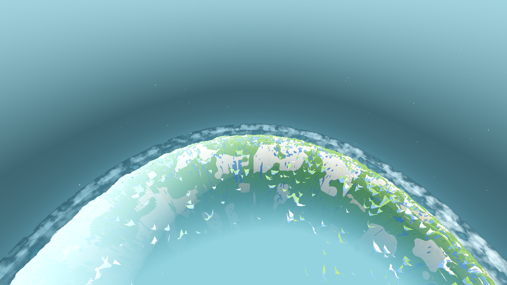
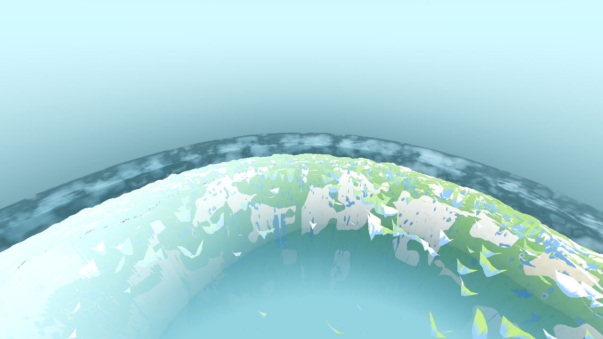
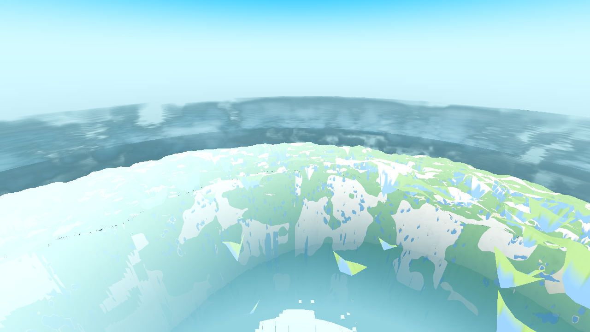
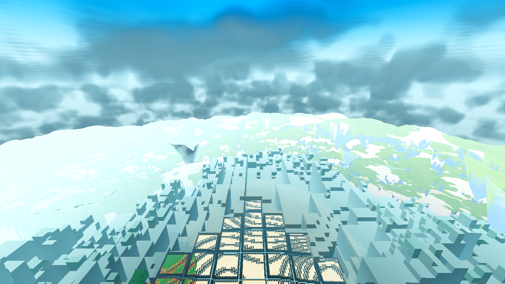
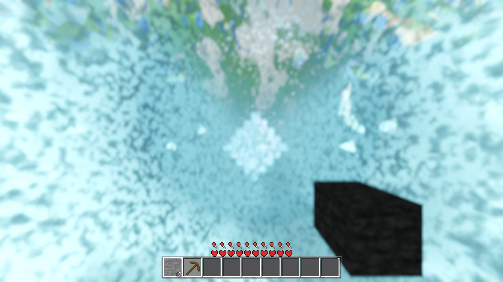
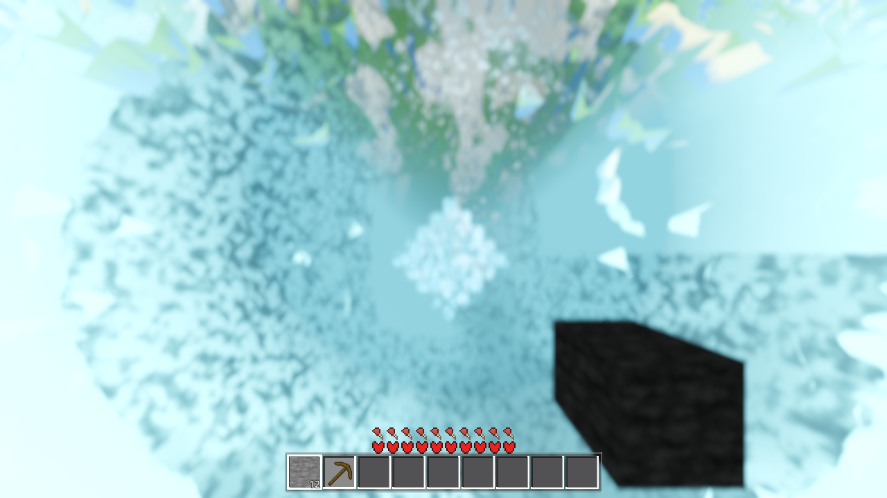

Run: R24/F83 user config (u_fog_far = 332.0 m, render edge 400.0 m), seed 44, Forward+ lavapipe, 1280×720, 22 renders (11 before + 11 after; the wb264 before/after pair sits inside the sets), all rc=0 / 0 errors. Acceptance measured from frames, not code. No commits — coordinator.
| Item | Result | Measured evidence |
|---|---|---|
| 1 — medium/low LODs disappear at height with the high | HOLDS (no code change owed) | Every near-tier material (band A ×4 chunk shaders + annulus lod_avg ×1 + fluid ×1) shares ONE rule: discard at view distance ≥ u_fog_far = 332 m, the same value that starts the body's op ramp. Ladder: at 700 m and 1600 m the near tiers draw 0 px (body-off vs world-off frames pixel-identical, before AND after); at 2600 m they are geometrically outside the frame (nadir 53.5° off axis > 37.5° half-FOV; the annulus is a ≤5.7° arc about nadir). At 120/300 m every tier that should draw does. Above handover: only the planet (body 42.31% of frame at 700, 31.45% at 1600) and its atmosphere. |
| 2 — limb effect applied to the low LODs instead of the satellite body alone | FIXED, per-material (no gate left to reopen) | The annulus shader lod_avg.gdshader carried the only limb term in any near-tier path: a "haze bridge" haz = mix(1.0, fog_f, w) that forced the outer 48 m of the annulus (a fixed 336–384 m ring about the world origin) to 100% air colour at any view distance — a rim painted on the low LOD, visible whenever the player is away from the origin. Removed: the fragment is now haz = fog_f (the engine depth-fog model, identical to band A at the same distance). At the wall fog_f = 1.0 = u_air, so the AC-0400 single-source seam with the body's haz_d rim is preserved by construction. The other five near-tier shaders were audited: fog-only, untouched. The missed case, measured: the rim on near tiers at a gate-open altitude (700 m rung, S = 0.132): the near tiers draw 0 px there (partition), so their rim is 0 px before and after — the rim visible at that altitude is the body's (42.31% of frame) plus the gated background glow (S = 13.2%). |
| 3 — 2D clouds (superseded by AC-0405) | STILL HOLDS after the change | Volumetric cloud is default-ON in every ladder frame (SATDIAG: outer shell r=4400 visible, cov 0.750; inner shells hidden = the AC-0405/0406 volume state). Deck A/B at 1600 m: 4.85% of the frame drawn by the deck, before and after (byte-identical frames). The 120 m frame shows the volume from inside the shells. AC-0402 sky (S-blend 0→13→92→100% up the ladder), AC-0399 fill, AC-0398 lighting all visible in the ladder frames. |
| Rung (radial alt) | S (limb gate 500–2000) | Body (A−B) | Near tiers (B−W) | Cloud deck (A−C) | Before vs after |
|---|---|---|---|---|---|
| 2600 m | 1.000 | mottled disc fills frame | 0 (outside frame: nadir 53.5° off axis) | — | byte-identical |
| 1600 m | 0.921 | 31.45% of frame | 0.000% (B−W pixel-identical) | 4.85% | byte-identical (L and C frames) |
| 700 m | 0.132 (gate open) | 42.31% of frame | 0.000% (B−W pixel-identical, before and after) | — | byte-identical (L and B frames) |
| 300 m | 0.000 | op ring (op_nadir = 0) | drawn: band A 0–128 m + annulus 128–142 m (view distance < 332); at this altitude the whole near field is 89–100% fog, so the tier split is 0.00% in pixels (MEDIUM_START probe: 13 px) — the tiers are indistinguishable here, by fog, not by partition | — | byte-identical |
| 120 m | 0.000 | op ring (op_nadir = 0) | drawn: band A 0–128 m (crisp voxels) + annulus 128–310 m (flat quads = 27.48% of frame, MEDIUM_START probe) + volume cloud above | — | byte-identical |
Takeoff = the same five frames walked in reverse. A still at altitude h is direction-agnostic: S, the body op ramp, the fog wall, the tier partition and the cloud state are all functions of altitude only (frozen player, view-biased fill, body dissolve, AC-0384 §25.1 caveat 3). No separate takeoff render is owed or run.
Shells at every rung (SATDIAG in every log): cloud outer shell r=4400 visible cov 0.750, inner shells hidden (volume state); satellite body MI visible in tree with per-fragment op (0 below the 500 m handover, ramping through 332–400 m view distance); near-tier streaming untouched (no scheduling change in this ticket).





The defect (pre-fix fragment, the only limb term in any near-tier path):
The fix (post-fix fragment — fog only, nothing else):
Per-material, not gated: the term is gone from the path — there is no uniform, no smoothstep, no condition a later change could flip back. At the fog wall (d = u_fog_far) fog_f = 1.0, so the annulus ends in exactly u_air where the body's haz_d rim begins — the AC-0400 single-source seam (one u_air, AeroLib.fog_display, pushed to body + sky + annulus) holds at every view distance.
What the removed term did in the user's state (player at taxi 400 from the origin, the w=0 side of the annulus) — deterministic evaluation, R24/F83 (fog 100→332 m):
| view distance | 150 m | 200 m | 250 m | 300 m | 330 m (wall) |
|---|---|---|---|---|---|
| pre-fix air fraction (w=0 region) | 100.0% | 100.0% | 100.0% | 100.0% | 100.0% |
| post-fix air fraction (fog_f) | 21.6% | 43.1% | 64.7% | 86.2% | 99.1% |
The pre-fix annulus showed a hard 100%-air ring 336–384 m from the origin at any altitude — the "rim around the low LOD" — with fog applied only inside 336 m. The post-fix annulus fogs exactly like the high tier does at the same distance, and the two tiers are indistinguishable at the wall.
User-state probe (before/after). Player teleported to (400, 0) — taxi 400 from the origin, straight down, eye 264 m above the exact C++ surface (166 at (400,0) via AweGen.column_heights16). The drawn annulus straddles the w=1/w=0 split (the −X half faces the origin: w=1; the other half: w=0), so one frame carries both sides:
| before (w-band present) | after (fog only) |
|---|---|
 |
 |
Diff footprint: 20.78% of the frame, confined to the annulus ring (band A core, the stone outcrop at pixel (940,580), and all geometry byte-identical). Caveat, stated honestly: the 1200-frame drain has a wall-clock window, so the near-field streaming state at this recentered probe differs run-to-run — the frames carry streaming-state noise on top of the colour fix (uniform pale (230,255,255) patches in the after frame are background through not-yet-streamed annulus columns, not u_air). The w-band effect itself is the deterministic table above; the frames are the qualitative user-state view.
Every ladder log (before and after) carries the AC-0405 volume state: c0{vis=true r=4400 cov=0.750}, c1/c2{vis=false}. Deck A/B at 1600 m: 4.85% of the frame drawn by the deck, before and after (clouds-off frame byte-identical). The 120 m frame shows the volume from inside the shells. The change in this ticket touches no cloud path.
| Gate | Before | After |
|---|---|---|
| G0 headless + census (SCRIPT/SHADER errors) | rc=0, 0/0 | rc=0, 0/0 |
| shaderforce (12 shipped shaders forced through Forward+) | n/a (pre-change baseline) | rc=0, 12/12 verdict=ok, lod_avg declared=6 params=6 |
| smoke battery (player;interact;light;fluids;genhash) | n/a | rc=0, ok:true, 0/0, genhash 25 columns |
| renders (Forward+ boot, fog_far=332.0 asserted, 0 errors) | 11/11 rc=0 | 11/11 rc=0 + 2 probe |
spec.html was missing at start and was generated via tasks/scripts/spec_template.py AC-0404.7094d7669b227a5b5cfee6ec5a8bb8a5, verified) and the before frame re-rendered cleanly.Generator.terrain_height in GDScript is an approximation — 124 vs the true 140 at spawn — and was not trusted for placement).main.gd, game.gd, drop.gd, debug.gd) untouched, read-only.Captures (this folder): ac0404-b-l{2600,1600,700,300,120}.png, ac0404-b-b700/w700/b1600/w1600/c1600.png, ac0404-b-wb264.png (before set) · ac0404-a-l{2600,1600,700,300,120}.png, ac0404-a-b700/w700/c1600.png, ac0404-a-wb264.png, ac0404-t120a.png, ac0404-t300a.png (after set + tier probes). Logs: .scratch/ac0404/shot-*.log (git-ignored). Files changed: godot/core/lod_avg.gdshader only.